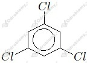
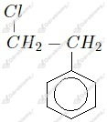

a) fluorometan
b) tetrachlorometan
c) bromoetan
d) 2-chloropropan
e) 1,2-dibromoetan
f) trijodometan
g) chloroeten
h) 1,1,2,2-tetrafluoroeten
i) chlorobenzen
j) bromofenylometan
a)
b)
c)
d)
e)
f)

g)

Wzór tego związku możemy zapisać jako CxHyIz. Zaczynamy od obliczenia zawartości procentowej jodu:
Masa molowa węgla to 12 g/mol, wodoru 1 g/mol, zaś jodu 127 g/mol. Liczymy wartości indeksów x, y oraz z.
Wzór rzeczywisty tego związku to
Prawidłowa kolejność zgodnie z rosnącą temperaturą wrzenia:
Prawidłowa kolejność zgodnie z malejącą temperaturą wrzenia:
a) 2,2-dimetylobutan-1-ol
b) propan-2-ol
c) etano-1,2-diol
d) pentan-2-ol
e) pentan-3-ol
f) fenylometanol
g) 2-metylopropan-2-ol
h) propano-1,2,3-triol